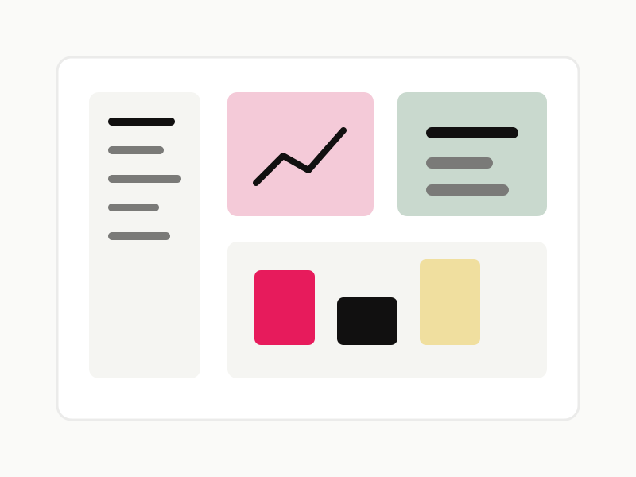

Research Ops / Product Strategy
Insights Workspace
A dashboard concept for tracking research findings, surfacing patterns, and turning customer signals into product decisions.
Focus
Helping teams connect qualitative signals to roadmap conversations with clearer tagging, summaries, and shared visibility.